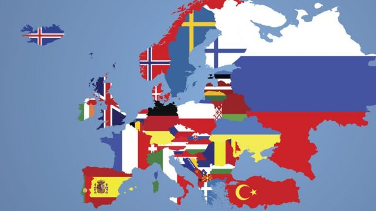

| LUGAR |
MAPA Y ENLACE |
DESCRIPCIÓN |
MALLORCA |
 |
En mallorca tenemos la suerte de contar con 3 panaderias entre las 93 mejores del mundo, estas son:
- Fornet de la Soca, en Palma de Mallorca
- La Pastisseria Real, en Palma de Mallorca
- Forn i Patisseria Gelabert, en Llubí
|
| ESPAÑA |
 |
En España, sin duda alguna el mejor pan se cuece en los hornos de Galicia, tanto es así que los Gallegos tienen
9 panaderias de entre las 80 mejores de España. La gastronomía gallega es especialmente rica, pero su prestigio no
solo vive de mariscos o grandes vinos, sino que un producto tan aparentemente sencillo como el pan es todo un tesoro
en los hornos y las mesas- de Galicia.
Y decimos que parece sencillo porque en realidad lograr un buen pan tiene su miga. Por eso tiene más merito si cabe
que nueve panaderías gallegas se encuentren entre las 80 mejores de España, aumentando en dos los establecimientos que
lograron este reconocimiento en 2018. Cuatro en Pontevedra, cuatro en A Coruña y una en Ourense convierten a la
comunidad en parada imprescindible dentro de la Ruta Española del Buen Pan 2021.
|
| EUROPA |
 |
En Europa, hay muchisima varidad de panes y estilos de panes, se han contablilizado mas de 50.000 panes tipicos de cada
zona o region de la comunidad, es una selección tan dificil, que nos tenemos que apoyar en el sistema SCHENGEN para saber
cual es la panaderia que mas vende dentro de la EUROZONA, ahi sin duda los que más genero mueven y mas productos ofrecen,
son los alemanes de EUROBAKERIES, con un volumen de creacion y exportación,
que asustaria a cualquier panaderia tradicional, son bastante conocidos por ofrecer una gran cantidad de productos,
con una altisima calidad y a precios asequibles.
|
| TIERRA |
 |
Mirando mas afuera de nuestras fronteras, te cuento cuales son las mejores panaderias del mundo:
- NUEVA YORK SULLIVAN STREET BAKERY
- SAN FRANCISCO TATINE BAKERY
- SEOUL ARTISAN BAKERS
- BERLIN THE BREAD STATION
- MILAN FORNO COLLETIVO
|